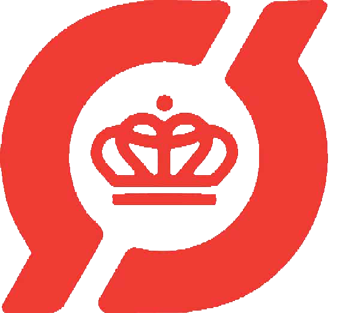
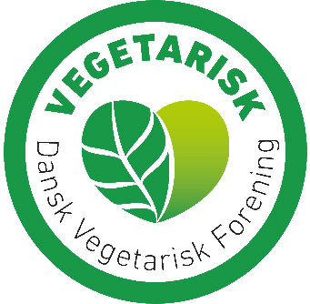

”Mit navn er Mustafa Kilic, i 1997 startede jeg i Bazar Vest og nu har jeg Kilic Marked. Det vigtigste for mig er kvalitet, for hvis jeg ikke selv kan spise mine varer, så vil jeg ikke sælge dem.”


”Lige siden jeg flyttede til Danmark har jeg altid ønsket at sælge økologiske vare. De sidste tre år har efterspørgslen på økologi steget - folk vil generelt gerne spise sundere og passe på deres helbred. Derfor er ca. 40% af mine varer økologiske.”
”Jeg køber varer ind fra 40 lande, og jeg har mit eget risteri, så jeg kan sørge for, at produktet lever op til den standard, som jeg forventer. Hos Kilic kan du finde et udsøgt sortiment af kvalitet fra hele verden til en lav pris.”